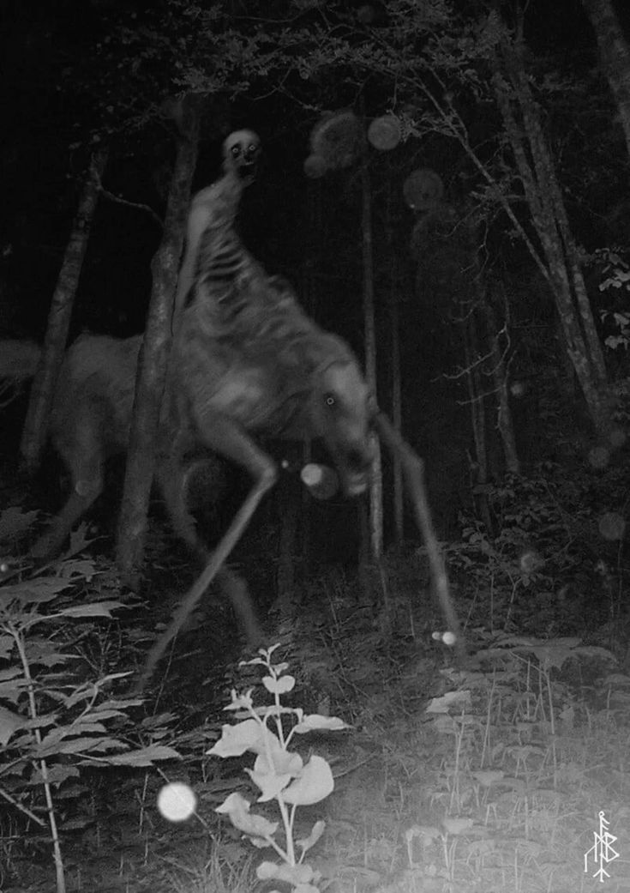

THE WOODS
Something Was There

Shawn grabbed Karla's hand.
"We need to go."
Karla didn't move.
She was staring between the trees.
Shawn followed her gaze.
At first, he didn't see anything.
Then something moved.
Shawn stopped breathing.
It stood between the trees.
Shawn had never seen any animal like it, if it could even be called that.
Its body was twisted and warped in a way that made it difficult to focus on.
Too many limbs.
two heads.
None of which had what you would consider a face.
it begain to groan and stifle towards them.
Karla screamed.
"RUN!"
Shawn pulled Karla behind him as they raced through the trees.
Branches tore at his clothes.
Karla was crying.
"SHAWN!"
He could hear her falling behind.
"WAIT!"
Shawn didn't stop.
He ran faster.
He didn't look back.
He didn't hear Karla anymore.
Shawn kept running.